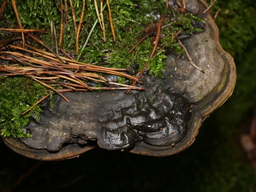

树干长出下表面发白的硬质层架状菌体
木质菌架可能跨季留存，先检查着生处，再判断直立树干是否需要专业评估。

检查植株
先看菌体着生位置。树舌类上表面暗哑，下表面有浅色孔层，受碰压处可留下褐色痕迹。记录菌架来自旧剪口、干基还是高处大枝，拍摄周边树皮变化，无需刮擦白色孔层作试验。
区分相似表现
邻近旧树桩上的菌体与直接着生于活树主干的意义不同，拍清连接处并保留原状。
现场处理
即使树冠仍绿，菌体也可能提示木材内部腐朽。树体伸向常有人活动的区域时，请树艺师评估。
后续复查
记录不同高度的菌体、旧伤和倾斜变化。摘掉菌体无法判断树干还剩多少承重木材。
值得单独记录的细节
分叉树干上有菌架时，分别记录其着生于哪一干、哪一侧。正面照片可能让单干上的菌架看起来像长在两干共用的枝杈处。
菌架脱落后怎样评估这棵树
菌架掉落，只是少了外面能看见的部分。先记下它原来长在主干、枝杈还是旧伤口上，再从远处看下面有没有座椅、步道或停放的车辆。若同一处又长出菌架，或附近出现裂缝，把两次照片交给树艺师。不宜靠敲击、钻孔或踩压来判断里面还有多少牢固木材。